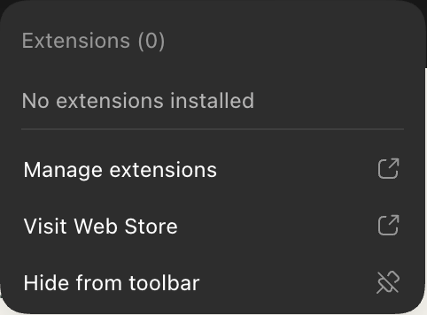
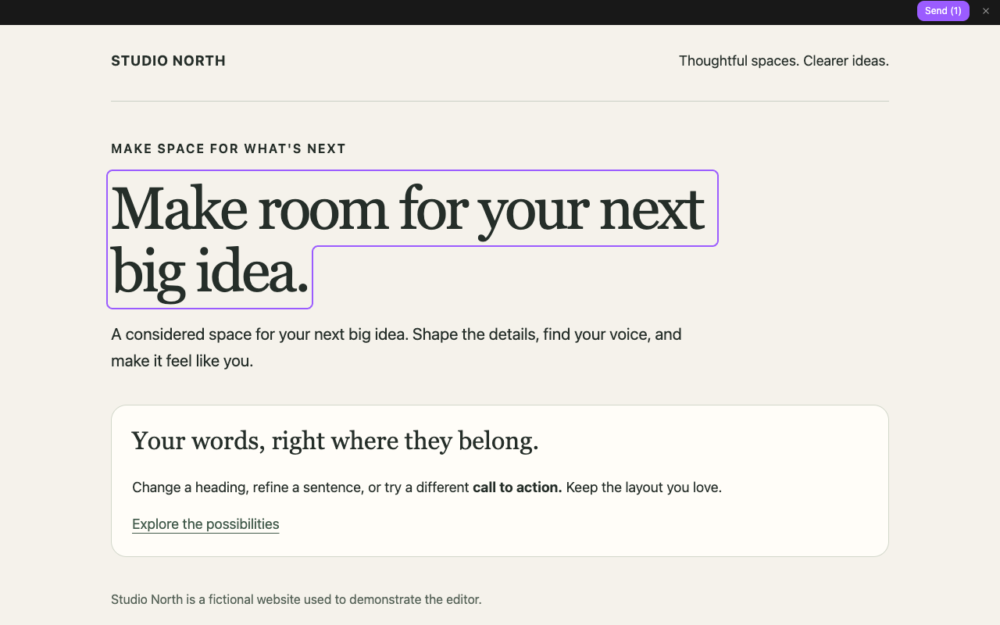

CODEX IN-LINE TEXT EDITOR
Your words.
Right where they belong.
Edit website text in context, then give Codex the exact changes to apply to your source.
Set up inside Codex
For the edit → Send → chat workflow, install this extension in Codex’s built-in browser. Installing it in a separate Google Chrome window does not install it in Codex. You need a Codex version with browser-extension support.
Install in Codex’s browser
Open a website in Codex’s right-hand browser panel. Click the puzzle icon → Visit Web Store. Find Codex In-Line Text Editor, choose the store’s install button, and confirm the extension permissions.

Codex’s Extensions menu. Choose Visit Web Store. If your Codex browser has no extension menu, update to a version that supports browser extensions before continuing.
Pin the white pencil
Open the puzzle menu again and find Codex In-Line Text Editor. Use its pin control so the white pencil stays beside the address bar. Reload your website if it was open before installation.
ExtensionsPinPinning sequence (illustration). The pencil opens the editor only when you click it. Connect this website to this chat
Open your website’s source project in Codex. Copy the request below and send it in that project’s chat. Codex can set up the local companion and open the connected page for you.
View the setup request
Connect each new tab from its own chat. The companion must stay running. If you see Copy edits instead of Send, that tab is not connected yet; copied edits can still be pasted into your project’s chat.
Manual setup and requirements
Direct Send needs Node.js 20 or later and a Codex CLI with
codex queue. No API key is required. Download the local companion and keep its files together. Run:node /path/to/companion/connect.mjs --target https://your-website.example/page --project /absolute/path/to/website-source
The process must have the intended chat’s
CODEX_THREAD_IDor exact verified--thread. Verify its returned project and thread, then open itsconnectionURLin that chat’s tab.Click the pencil. Edit. Send.
Click the pinned white pencil, click words on your page, and type. Click another section to keep editing. The pencil turns purple while editing is active, and white when editing is off. The editing bar appears only after your first change. Buttons and links can be edited without activating their actions. The purple outline shows where you’re typing. Return starts a new paragraph; Shift+Return starts the next line.
Once something changes, click Send (1) (or the current edit count). The exact replacements and page URL go to your connected Codex chat so Codex can update and verify the matching source.

Actual extension screenshot on a fictional website. Direct Send requires the connection in step 3. Click the pencil again or × to close. If there are unsent edits, choose Keep editing or Discard and close. Your website stays free of the editing strip until you click the pencil again.
The preview is a draft. Sending asks Codex to change the source; it does not publish your website. Review Codex’s verification before releasing changes. Delivery and Codex processing can take time.
Keyboard, drafts, and recovery
Tab to text and press Enter to edit; Escape finishes the current section. Drafts survive reloads in the same tab while the browser remains open. Copy important drafts before closing a tab, restarting, navigating away, or reconnecting. If delivery is uncertain, check the chat before retrying.
Supported pages
Ordinary HTML text on HTTP and HTTPS webpages, including local development previews. Protected browser pages, the Chrome Web Store, PDFs, canvas text, nested frames, and text inside other shadow roots are not supported. Existing form fields and rich-text editors are left alone. Some site layouts or framework rerenders may be incompatible.
The toolbar is a webpage-based strip styled separately from the page; it is not native browser chrome. Website scripts remain active. Use the extension on pages you own or are authorized to edit.
Troubleshooting and support
If the pencil is missing, confirm the extension is enabled for this site and reload after copying any drafts. If Send is unavailable, reconnect this exact tab from its intended Codex chat with the local companion running. For an uncertain Send result, check the chat before retrying. For other questions, use the developer contact on the Chrome Web Store listing; do not include private text, tokens, or account credentials.
Optional automatic loading
Right-click the extension’s toolbar pencil and open Options to choose “Show pencil automatically.” It is off by default. Copy any draft first, then reload to apply the setting. You can also restrict site access or disable the extension in your browser's extension manager.